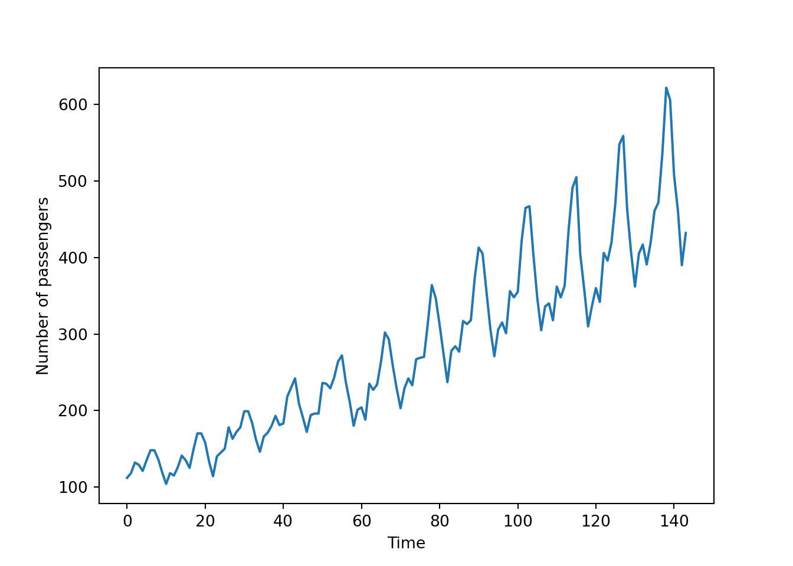
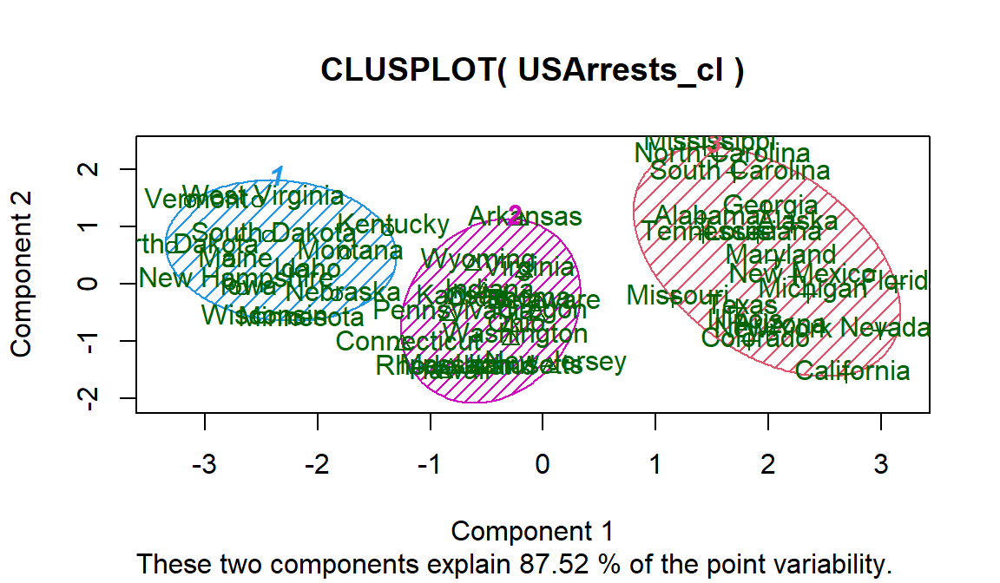
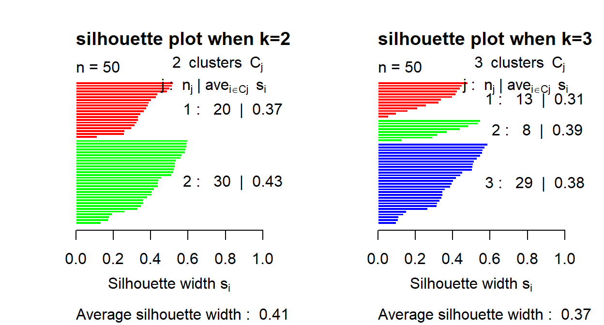
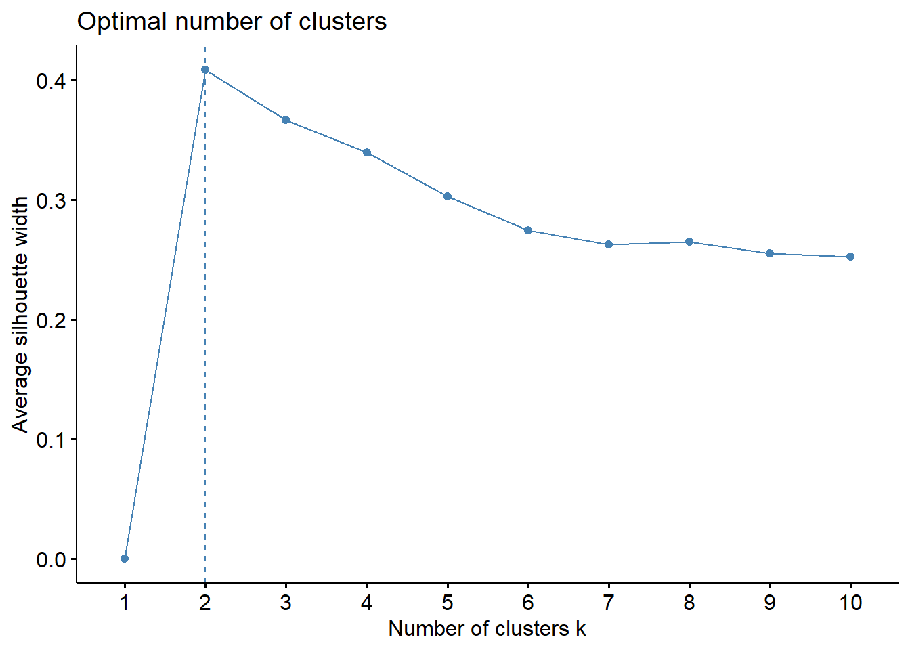
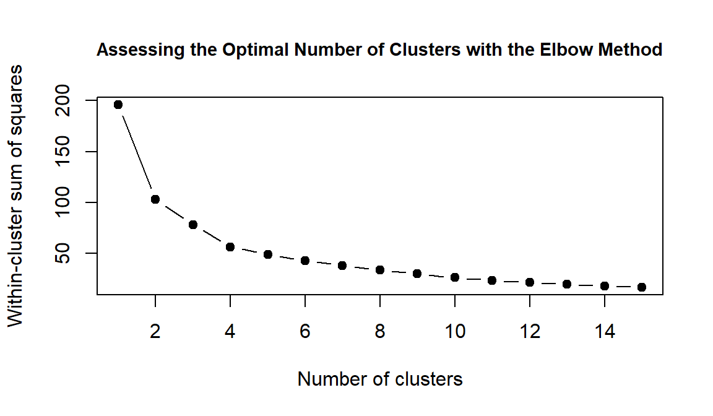
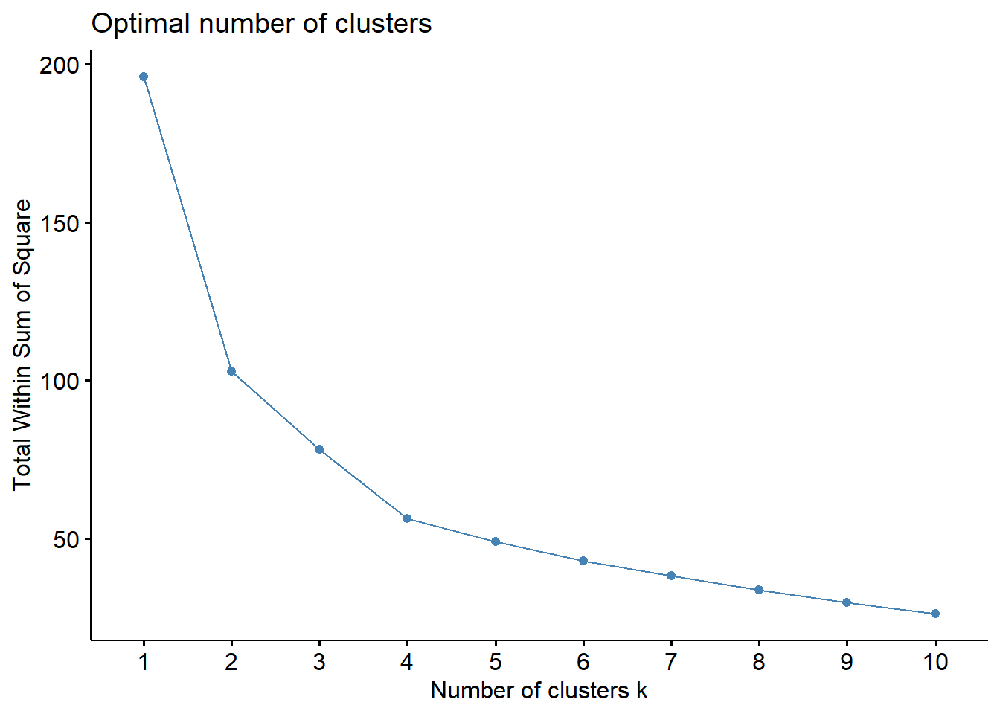

2 Exercise 1: USArrests
In this exercise, we will continue studying the USArrest data and apply \(K\)-means for clustering.
QUESTION:
- Perform \(K\)-means clustering with your chosen value of \(K\). (\(K\) does not have to be optimal at this stage.)
Suppose we would like to group the data into 3 clusters. The corresponding R code is:
set.seed(1)
USArrests <- data.frame(scale(USArrests))
usarr.kcl <- kmeans(USArrests, centers=3, nstart=100)- Visualise the \(K\)-means result and compare with HAC result obtained in Lab 8.
plot(USArrests, col = usarr.kcl$cluster) The number of observations in each cluster seems to be more balanced in the \(K\)-means case compared with the HAC case. In addition, as \(K\)-means assign observations to their nearest centre, there seems to be slightly less overlapping of clusters.
- Get the cluster means and append the cluster assignment to a new data frame.
Use $cluster to extract cluster assignment and aggregate function to calculate cluster means. The latter function has been studied in Lab 3 (Section 3.1).
# get cluster means
aggregate(USArrests,by=list(usarr.kcl$cluster),FUN=mean)## Group.1 Murder Assault UrbanPop Rape
## 1 1 -0.9615407 -1.1066010 -0.9301069 -0.9667633
## 2 2 -0.4469795 -0.3465138 0.4788049 -0.2571398
## 3 3 1.0049340 1.0138274 0.1975853 0.8469650# append cluster assignment
USArrests_cl <- data.frame(USArrests, usarr.kcl$cluster)- Plot the cluster results (saved in the new data frame) using the
clusplotfunction within theclusterlibrary.
library(cluster)
clusplot(USArrests_cl, usarr.kcl$cluster, color=TRUE, shade=TRUE,
labels=2, lines=0)
The clusplot function uses principal component analysis (PCA) to draw the data. Thus, Component 1 and Component 2 refer to the first and second PCs, and These two components explain xx% of the point variability lists the cumulative proportion of variation explained by the first two PCs.
- (optional) Now perform
kmeanswith a different value of \(K\). By taking advantage of thecluster.statsfunction, compare the similarity between two cluster results.
This refers to the supplementary material in Week 9 lecture note.
We have already said that choosing \(K\) (i.e. the numbers of clusters) can sometimes look arbitrary. In that case we may be interested to compare the similarity between two cluster solutions using a variety of information criteria.
library(fpc)
set.seed(1)
usarr.kcl.3 <- kmeans(USArrests, centers=3, nstart=100)
usarr.kcl.5 <- kmeans(USArrests, centers=5, nstart=100)
d <- dist(USArrests)
cl.stats <- cluster.stats(d, usarr.kcl.3$cluster, usarr.kcl.5$cluster)The corrected Rand index provides a measure for assessing the similarity between two partitions, adjusted for chance. Its range is \(-1\) (no agreement) to \(1\) (perfect agreement). Using the Rand index, agreement between the cluster solutions is
round(cl.stats$corrected.rand,digits=2)## [1] 0.52- Use a silhouette plot to assess the results when using the
kmeansfunction with different values for \(K\). Suggest which value of \(K\) you might select to achieve the optimal clustering performance.
Reminder: The silhouette width and plot were introduced in Week 8.
library(cluster)
usarrests.kmeans.2 <- kmeans(USArrests, centers=2, iter.max=1000)
usarrests.kmeans.3 <- kmeans(USArrests, centers=3, iter.max=1000)
si.k2 <- silhouette(usarrests.kmeans.2$cluster, dist(USArrests))
si.k3 <- silhouette(usarrests.kmeans.3$cluster, dist(USArrests))
par(mfrow=c(1,2))
plot(si.k2, col = c("red", "green"), main = "silhouette plot when k=2")
plot(si.k3, col = c("red", "green", "blue"), main = "silhouette plot when k=3")
We can see that the 2 cluster solution has a higher average silhouette width than the 3 cluster solution. So if we were using this measure to decide, we would select the 2 cluster solution.
To test over a larger range of \(K\), we can use the function fviz_nbclust from the package factoextra. The argument method allows for different criteria in selecting the optimal number of clusters.
library(factoextra)
ggplot_fviz_sil <-fviz_nbclust(USArrests, FUN=kmeans, method = "silhouette")
ggplot_fviz_sil #average siluhouette; the higher the better
- Use the within-cluster sum of squares as the measure to select the optimal value of \(K\).
Create a plot with the number of clusters on the horizontal axis and the total within cluster sum of squares value for the model with each number of clusters on the vertical axis. The number of \(K\) is usually chosen to be where there is a bend in the lines joining the values.
set.seed(1)
K_max <- 15 #maximum number of clusters
wss <- rep(NA, K_max)
for (i in 2:K_max){
usarrests.kmeans <- kmeans(USArrests, centers=i, nstart=100)
wss[i] <- usarrests.kmeans$tot.withinss
}
wss[1] <- usarrests.kmeans$totss
plot(1:K_max, wss, type="b", pch=20, cex=1.5, cex.main=0.9,
xlab="Number of clusters", ylab="Within-cluster sum of squares",
main="Assessing the Optimal Number of Clusters with the Elbow Method")
In this plot, it is slightly hard to find a clear cut-off point. We may choose two clusters or four clusters as it seems that the reduction in within-cluster sum of squares becomes slower.
Alternatively, we can again use the fviz_nbclust function by setting the method to wss.
ggplot_fviz_wss <- fviz_nbclust(USArrests, FUN=kmeans, nstart=100, method = "wss")
ggplot_fviz_wss #total within sum of square; same as the Elbow method, look at the knee